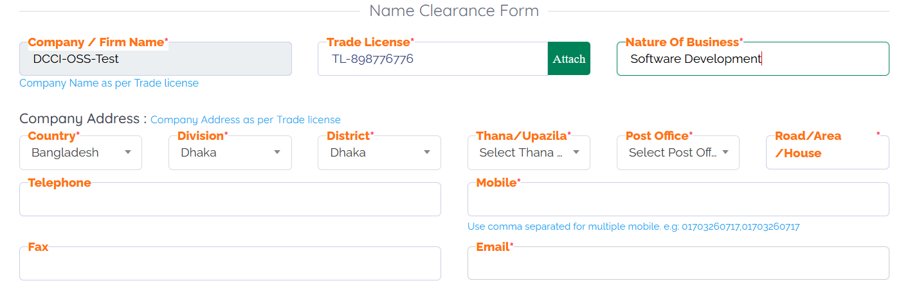
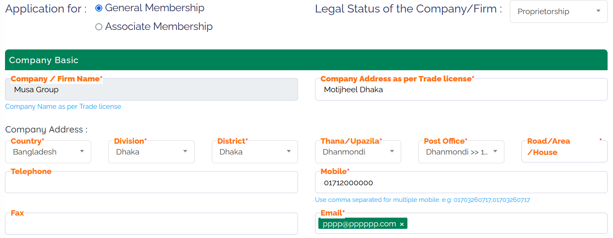
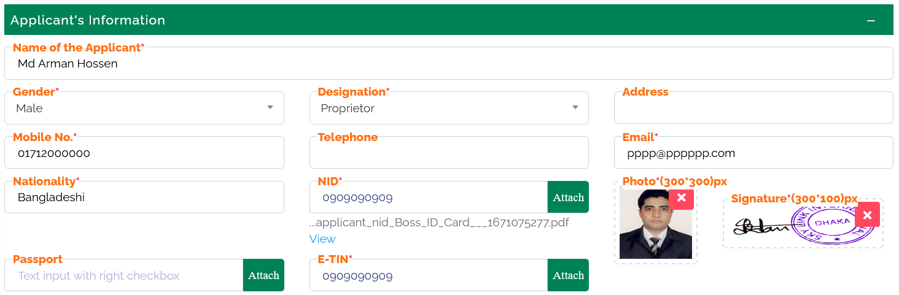

1. Persons, firms, companies (including multinational companies) and corporate bodies (including sector corporations, banks, insurance etc.) engaged in trade, industry or any other kind of business are eligible for membership of the Dhaka Chamber of Commerce & Industry (DCCI).
2. Foreign Companies, Corporate Bodies operating in Bangladesh shall also be eligible for membership of the Dhaka Chamber of Commerce & Industry.
3. Every candidate for membership shall submit the prescribed online application from through the One Stop Service System. The DCCI authority holds the right to admit or decline a candidate for admission as a member as they may think fit.
4. To become a member of the Dhaka Chamber of Commerce & Industry (DCCI), you typically need to go through a verification process and obtain name clearance if you were not a member before.
5. After submitting the name of your organization and other required information as per the trade license, you can proceed to apply for membership with the DCCI once they confirm your submission.
6. Carefully read the instructions or guidelines provided with the application form. This will help you understand the requirements and any specific documentation you need to provide.
7. Fill in your personal details accurately. This may include your name, address, contact information, and other relevant personal information.
8. Trade license information: Include the details of your trade license, such as the license number, issue date, and validity period. Provide any additional documentation related to your trade license as specified.
9. Supporting documents: Attach any supporting documents requested, such as copies of your trade license, Memorandum and Articles of Association, Company E-TIN, Bank Solvency Certificate, BIDA Registration, BIDA Work Permit (foreign director), Fire License, Environment Clearance, Factory License, VAT, BIN, IRC, ERC, Deed, Application Latter (Company Letterhead Pad) identification documents, or other required paperwork if applicable. You do not need to submit all the documents. Submit only those documents that applicable for you. Scan each document as PDF. File size must be maximum 1 MB.
10. Once you have completed the application form and gathered all the necessary documents, submit the
form to the DCCI as per their instructions. This can be done either physically by visiting their office or
through an online submission process if available.
Membership Certificate
Upon receipt of the membership fee, the DCCI will issue your official membership certificate.
You can collect the certificate from the OSS System.
For any further inquiries or assistance regarding the membership application process, feel free to contact
the Dhaka Chamber of Commerce & Industry directly through their official contact channels.
Dhaka Chamber Building, 65-66 Motijheel C/A, Dhaka-1000, Bangladesh
Phone: +88-0247122986
IP Phone: +88-09-666888555
Fax :+88-02223380830
Email: info@dhakachamber.com
Website : www.dhakachamber.com